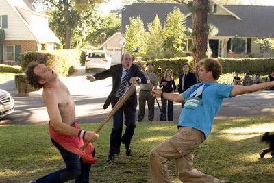
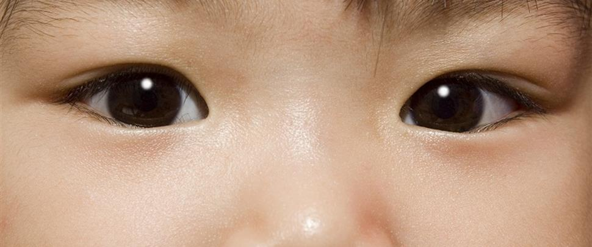
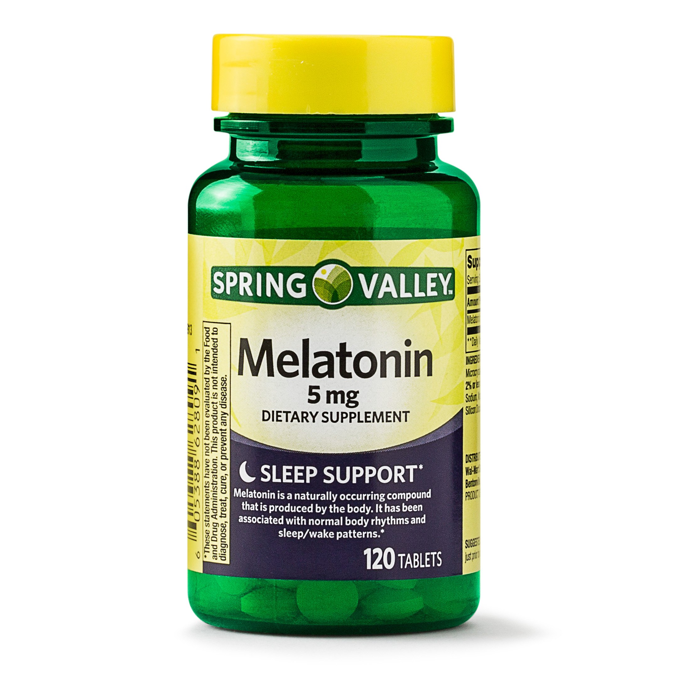
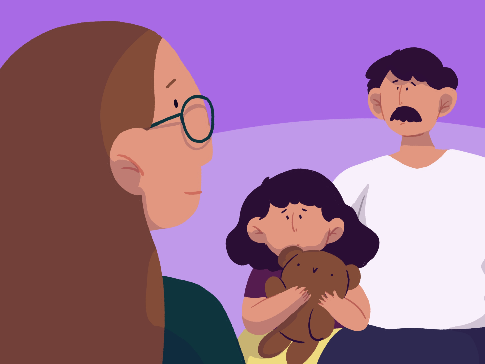

The process of being a teenager is the most difficult one. You always feel judged and want to be a part of something.

Sometimes being a teenager involves so much change that we don't know how to manage it. Remember you were a teenager too
so you are supposed to understand what they are passing by.
Do not be so obvious if you want to know about your kids life. with a
"hey, what's up?" it would be ok.
Always hug your kids, sometimes we spend more than a year without hugging our loved ones
and we start feeling distant.
Fight Causes, and solutions

- Attitude fight - is the most normal one the solution is " I unnderstand that being a teen is too much im sorry but I'm trying to communicate".
- food fight - "okey, if you do not want to eat this at least cook yourself something if you feel hungry"
- out fight - "if you don't want to go out at least let's go buy pizza or books, anything you want"
- rebel fight - "listen to me, and tell me why you are like this"
- favorite fight - if you have more than one kid at home there will always be a favorite fight - the solution is buying them the same things.
- shut up fight- if you have 2 kids it's normal to find them telling each other to shut up the solution is easy give 5 dollars at the begining of each week whenever one of them says "shut up" you take one dollar from them, whatever they have left they get to spend it on the weekend.
- tv fight- siblings will always fight for the tv so you can give them a max time to watch the tv, for example: sibling 1- 1 hour / sibling 2- 1 hour
- dog fight- when there's a baby dog in the family everyone likes to pick it up (give them turns) while they have their turns they have to clean whatever the dog does.
LOOKS
the look- I know that parents give " the look" to their kids when they are causing trouble but sometimes is not intimidating is just unnecessary.
deception look- every parent does it... when their kid does something wrong, believe me that look is just going to make the kid roll their eyes.
Angry look- it will work at the beginig but the kid gets use to it.
crying- feel like crying, it always works because they feel guilty and try to get better.
calmed look- this is our favorite one because it means that we don't have to go home to deal with trouble.
roll eyes- do not roll your eyes it gives you less authority in front of your family.
When having a conversation

- When your little one comes from school don't ask "how was school?" because that's the worst question for a teen to answer.
- Instead of "hi" sometimes say "hey".
- If your teen has a bruise don't say "did someone punched you?" because you wont get any information instead you could say "Did you punched him back?" this way he will tell you all about it.
- never ask "have you done your homework?" because that bothers a teenager, remember they are old enough to pay the consequences.
- Never stop them fom talking it's rare for a teenager to open themselves to their parents, if you shut them up they wont feel confident when talking to you.
-look at them in the eye and give them your complete attention. We get mad when we want to say something important but we get no attention.
-only interrupt if necessary, and say your opinion respectfully.
Melatonin pills:
Keeping emotions in
 As teenagers we don't want to give our problems to other people so we keep our emotions to ourselves.
We spend too much time in our rooms because we don't want to go outside to deal with more problems.
Most of the time we get tired from school so we go to sleep without even eating.
For us tears are just words that need to be written or spoken, so we have a diary to write how we feel.
Sometimes is best to take your son/daughter to a psychologists, because they can take out their emotions and feel relieved.
We want to be helped, and we try to give you signals but most of the time you don't notice. We understand that most of the time we have to be alone
while our parents work, but sometimes we need more attention and love. This can usually cause suicidal thoughts or even suicide. Never compare
your kid to another kid because you do not konw the deppression you are causing to them . Being the parent of a teenager is an impossible mission to the extreme, but believe me when I say that you'll
never regret it. Remember that being a parent is helping your kid not judging them.